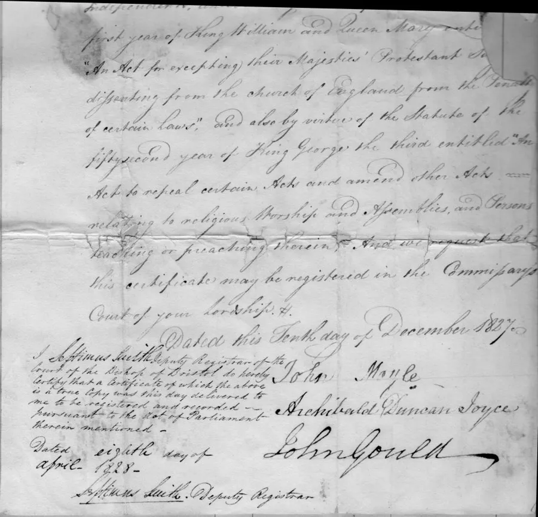
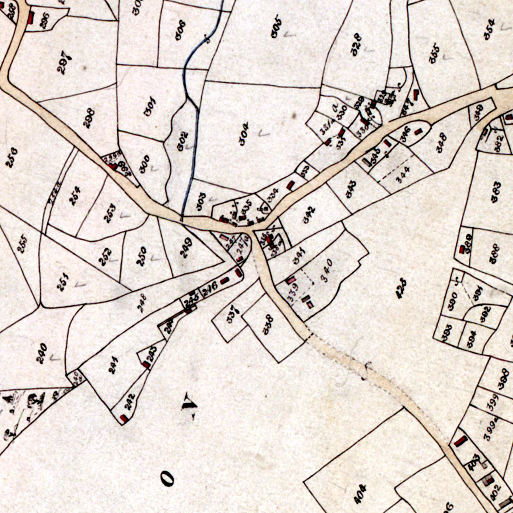
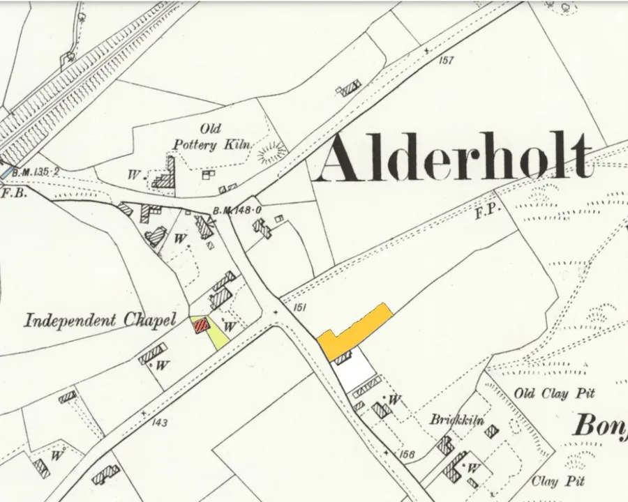
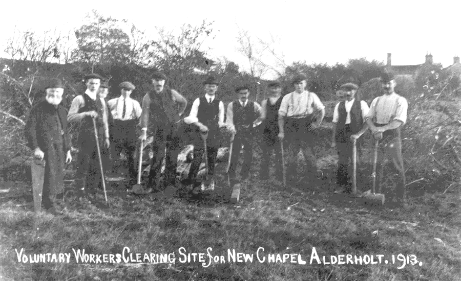
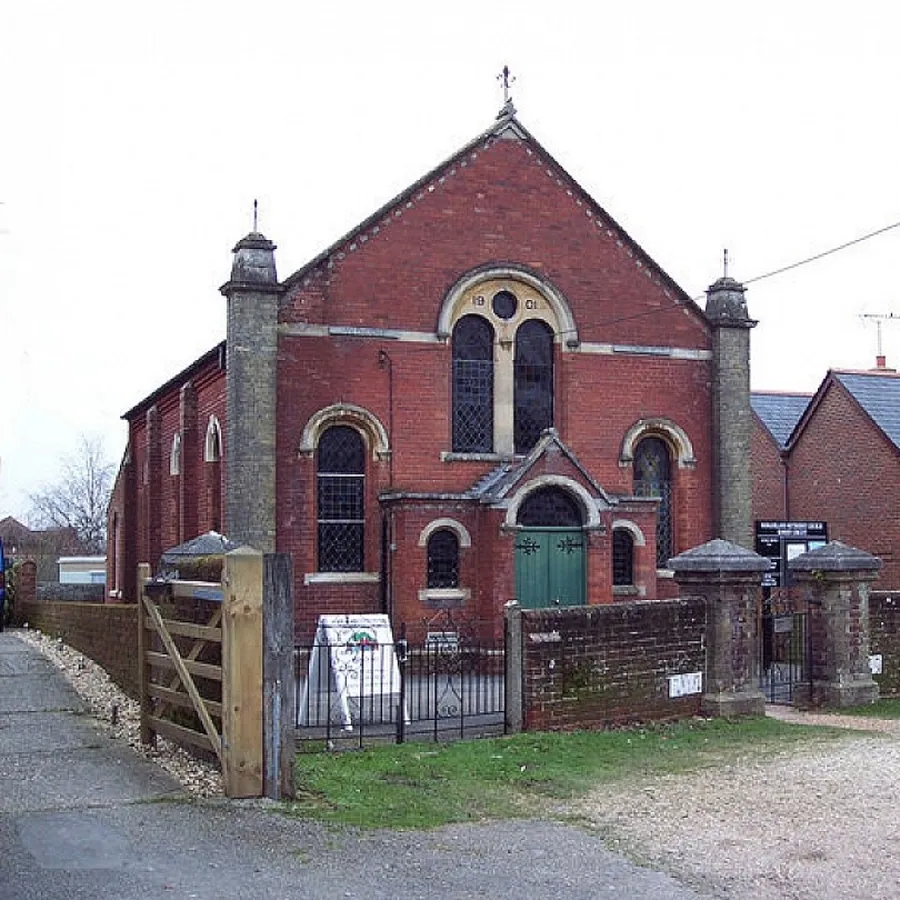
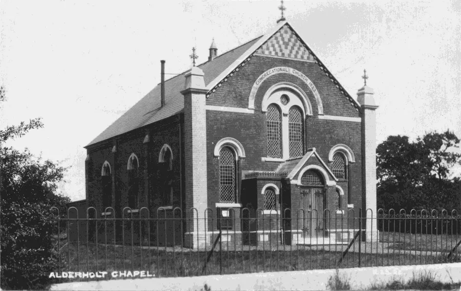
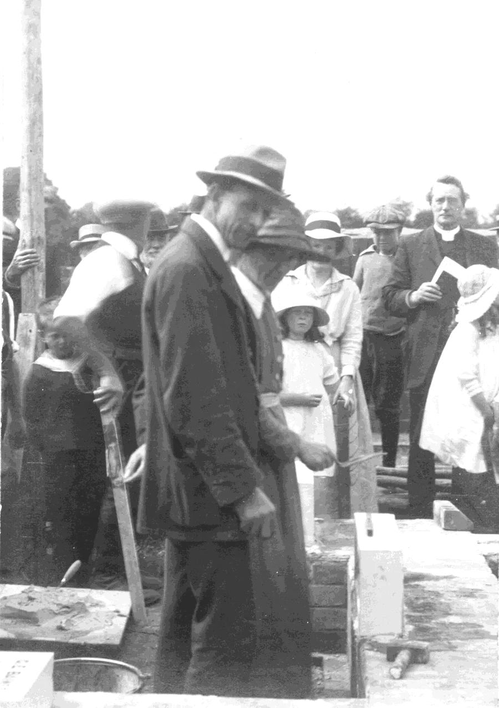
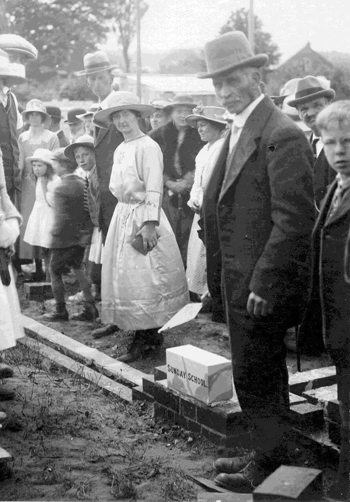
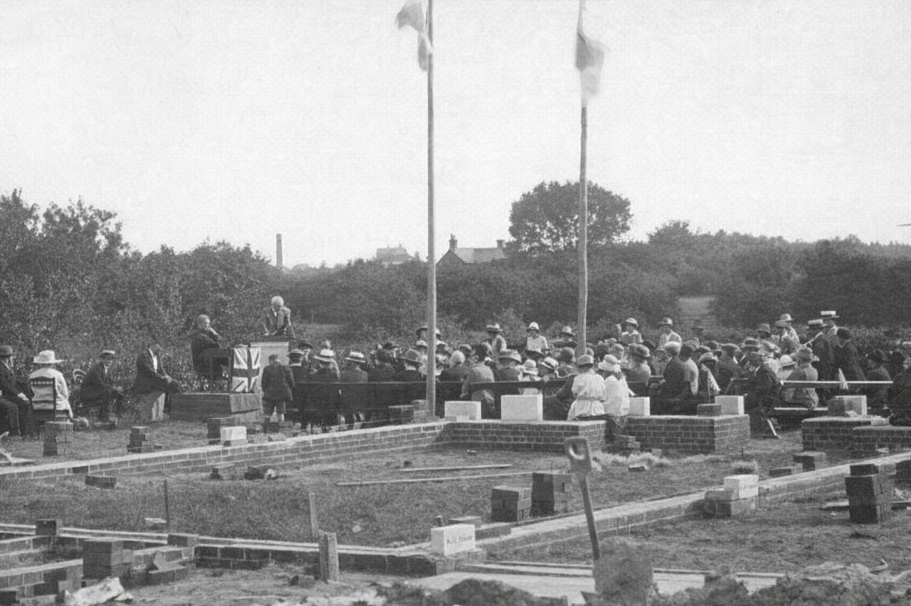
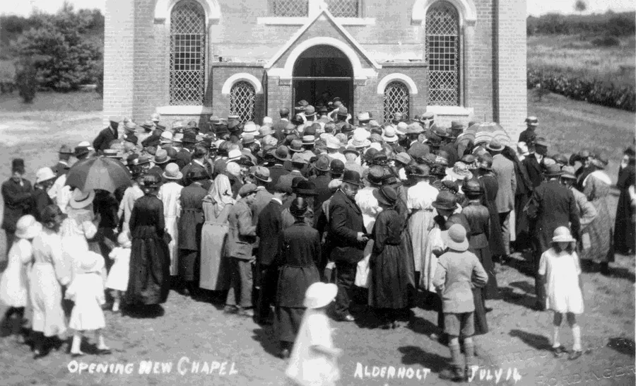

Alderholt Chapel Centenary – Part I
by Adrian King

The year 2024 celebrated the centenary of the new chapel.
In 1820 a Chapel was built of mud with a slate roof on the common near the junction of Fordingbridge and Ringwood Roads, now Hillbury Road. Before this date there does not seem to have been any regular place of worship for the nonconformists except the chapel at Cripplestyle. There is a tradition that at the beginning of the 19th century preaching was held in a cottage. Among the licences for holding divine service apart from the Church of England we find the following application
293. A building, Alderholt, in Cranborne, not named, 15th Jan. 1799.
Although the denomination is not stated it is highly likely that the licence was obtained by members of the Congregational Church in Fordingbridge. It is also probable that they conducted the services, as around this time they secured licences for Nonconformist worship in the villages of Godshill and Gorley.
A certificate dated the tenth day of December 1827 authorises James Fry to use a building in Alderholt “As a chapel for religious worship by protestant dissenters from the Church of England.”

A transcription of this document is available as a PDF.
On the 1847 Tithe and Apportionment the chapel is shown as 246, House, garden and chapel. It was built on land owned by William Chubb and James Reade was resident and the plot was ½ acre and 3 rods.

The 1820 building did not last very long because a brick replacement was built in 1860. It seems that the old chapel was demolished and another one built on the same site.
A letter dated 30th April 1858 from The Close, Sarum with the heading Alderholt Inclosure authorises the trustees of the independent chapel
“To enter upon and take possession forthwith of the allotment numbered 17” also “that the fences of and belonging to such allotment to be made and maintained by the owner.”

The chapel was registered as a place of meeting for religious worship by a congregation of Congregationalists on the 27th December 1860. The trust deed dating from 31st December 1861 states that the care of this building was committed to the Church at Fordingbridge, the deacons of which had absolute control.
The members gave ready assistance in labour and money according to their ability. With the kind help of friends around all the cost was speedily met.
Services were held each Sunday morning and evening mainly by friends from Fordingbridge. The Fordingbridge Pastor, Rev E. J. Hunt had oversight of the little flock. He took a service on each alternate Thursday evening.
Around the time of 1899 the Sunday school numbered 90 children and a Band of Hope numbered about 100.
In the early years of the new century the Members seeing the condition of the Old Chapel and a steadily growing village, thought the time had come to build a new and somewhat larger Chapel. This new Chapel would
“Meet the needs and make more comfortable accommodation for the people and also for the times in which [they lived]. And a desire was felt also for one of a rather better appearance."
By 1904 twelve of the original thirteen trustees had died and at a members meeting held on 7th April 1904 in the schoolroom at Fordingbridge Congregational Church eight new trustees were elected.
In 1913 the members of the Church had approached the Minister of Fordingbridge Congregational Church to see if he would make it known to the Marquis of Salisbury that they required a piece of land for the purpose of building a new chapel. The Marquis answered favourably but certain points in legal matters made it difficult for him to give the land free from conditions.
For a long time the members were in the dark as to what was being done and their patience was tried. In the end they heard from the Congregational Union through the Fordingbridge Minister that as they were acting upon the advice of their solicitor they had decided not to accept the land because of the conditions and restrictions contained upon it.
The Rev. Henry Coley who was the district secretary for the Congregational Union was approached by Mr. J. Baines the church’s pastor to seek permission to take the matter up independently of Fordingbridge. Permission was granted so Mr Baines wrote to the Marquis of Salisbury explaining why the Union had been unable to accept the land. He also conveyed the Alderholt members’ confidence that the Marquis would do everything possible to remove the conditions and restrictions attached to the offer.
The Marquis replied that there should be no conditions or limitations at all. To make it possible for him to overcome the difficulties of meeting the member’s requirements he would sell them the land and then return the purchase money. To this the members agreed. Lord Salisbury’s solicitors set to work at once and were asked to incorporate the Model Trust of the Congregational Union in the deeds.

Mr. J. Hoddinott sent a cheque for £25 to the Marquis of Salisbury and shortly afterwards the documents entitling them to the land for the purpose of erecting a chapel, school and house were made over to the trustees.
When the Marquis of Salisbury signed the Deeds on the 15th September 1913 he very generously sent back the £25 which was returned to Mr. Hoddinott. The Marquis also asked that the Solicitors account of £4 12s. 6d. should be sent to him so that he could pay it and make the gift complete.
So it was that on 17th September the day that the completed deeds were received, Mr. J. Baines, Mr. J. Hoddinott and Mr. F. Thomas attended the Union District meeting held at Winton. At that meeting they heard the gloomy report about the failure of the land purchase at Alderholt.
Much to the surprise of the members present, Mr. Baines rose and addressed them saying that during the last two and a half months Alderholt had taken up the matter independently and that all the requirements had been met. He then produced the deeds for the meeting to inspect.
So the land was purchased. The ground needed a considerable amount of work done on it such as grubbing up hedges trees and there were willing volunteers who provided labour. A photograph was taken of a work party and it was sent to the Christian Herald who printed it. Then a path was laid and a new oak gate.
With Mr. H. Wright as the treasurer of the New Building Fund fundraising started in earnest.
But the war years intervened. Because of the delay the graveyard was in use by 1917 long before the church was built. That is why some of the headstones are dated before 1923.

The members had heard of the Methodist Chapel at Nomansland, which had been built in 1901 at a cost of £700. They were taken by Mr. John Woodvine in his Motor to see it and were ‘unanimous about building one just like it or with very trifling alteration.’ Through various sales, promises and donations the building fund stood at £600. Mr. B. Hayter, Mr. Scammell, Mr. Urban Thorne, Mr. Hoddinott and Mr. Stickland, all owned horses and offered their services free to haul bricks, gravel and sand. With this offer of help the members ‘felt the time had come to rise up and build.’

Three builders were asked to tender for the work. Two of these were busy at the time and passed the tender to the same builder Mr. Reuben Moody of Landford. He had also built the Nomansland Chapel. The members agreed to provide the builder with sand, gravel and bricks, apart from a few white ones. Mr. Moody would provide the rest of the material for £925. Without hesitation the work was given to Mr. Moody and the foundation commenced to be dug out on 11th June 1923. The first bricks were laid on 21st June 1923.
At the Church meeting later that evening the stone laying ceremony was set for 2nd July 1923. There were promises of Stone Laying from
- Mrs. J. Baines
- Mr. & Mrs. B. Hayter
- Mr. J. H. Hoddinott
- Mrs. Nicklen
- Mr. & Mrs. F. Stubbings
- Mr. H. Wright
The stones to be laid varied in value £15, £10, £5, £2 and £1. Either old or young could lay bricks for one shilling each brick.


Around the Church today can be seen stones from the people named above with the exception of Mrs. J. Baines and Mrs. Nicklen. In addition there are stones laid by
- Miss E. M. Ballard
- Mr. & Mrs. B. F. Deacon
- Mr. E. & Miss S. Nicklen
- A. & R. Pinhorn
- Miss E. Taylor
- Mrs. J. Woodvine
- Mr. & Mrs. U. Thorne
The Band of Hope and the Sunday school also laid stones and there are stones in memory of E. L. Baines and F. H. C. Palmer.

The Rev. H. J. Spencer who was a former chairman of the Hampshire Congregational Union from Avenue Church Southampton was the guest speaker at the stone laying. He also conducted the opening ceremony of the new church on 14th July 1924. The Rev. Jones of Bournemouth took the service inside the Church. 400 people were present for tea and 500 people attended the evening meeting that was held in the field near the Chapel.
The cost of the public tea was set at 9 pence for adults and 6 pence for children.

The Chapel was free of debt by 1930.